NOE M9 · tokeny i komponenty
Etap E1b planu M9. Strona ładuje prawdziwe arkusze styles/noe/tokens.generated.css, tokens.css i components.css
oraz składa znaczniki pomocnikami scripts/ui/noe.mjs — to nie rysunek, tylko te same reguły, które dostanie Foundry. Profil noe-m9-r07-v1 bez zmian.
Przełącznik „Skala szarości” sprawdza zasadę P4: znaczenie ma przetrwać bez koloru.
- O2 — kolory semantyczne ok / warn / danger / info: propozycja kontra punkt wyjścia M8, z pomiarem odległości od A/B/R/I i od czerwieni skosu (tabela).
- Kolory mierników PW / KW / tymczasowe — nowe wartości spoza profilu (K11).
- Powierzchnie pochodne
--noe-raisedi--noe-inset(tokeny) oraz wygląd komponentów K1–K18.
Tokeny
Powierzchnie, tekst, linie — profil + pochodne
--noe-surface#191e23powierzchnia okna--noe-panel#293038panel, nagłówek sekcji--noe-raisedcolor-mix(panel, accent 10%)hover, wybór — pochodny--noe-insetcolor-mix(surface, czerń 30%)pola, tory mierników — pochodny--noe-text#edf0f2--noe-text-muted#b2bdc6--noe-text-disabledcolor-mix(muted, surface 45%)tylko nieaktywne pola; nigdy glif--noe-line#454f58--noe-accent#bdc6cdakcent interfejsu = focusOsiem źródeł — tło ikony · glif · akcent (linia pod próbką)
#6d2623 · #ffffff · #d57362
#4f4100 · #ffffff · #ddc052
#00484e · #ffffff · #56c5ce
#263574 · #ffffff · #7999ef
#4e2b6d · #ffffff · #bb85ea
#28481e · #ffffff · #9dc96a
#383e45 · #ffffff · #b8c1c9
#dfd1b1 · #161b20 · #dfd1b1
Sprzęt — kolor gołego glifu rodziny
--noe-eq-weapon#c3cbd2Broń--noe-eq-ammo#d0b27aAmunicja--noe-eq-armor#bdbaa5Pancerze--noe-eq-tools#8cbbb2Narzędzia--noe-eq-medical#a7c6adMedycyna--noe-eq-chemicals#b8abc6Chemia--noe-eq-explosives#c99f6eWybuchowe / paliwo--noe-eq-survival#c5b58eŻywność / woda--noe-eq-salvage#b5b9b6Fanty / wartościoweKoszty i niedostępność
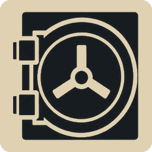
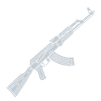
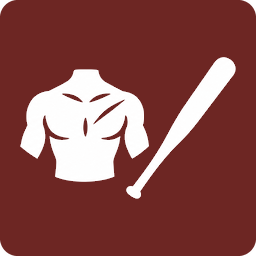
skos #ff554d · obrys #10161b · -45° · 112% · clamp(2px, 5,5%, 4px)
O2 — kolory semantyczne
Semantyczne zawsze idą z tekstem albo ikoną i nie zastępują kosztów: zielone koło A nie znaczy „gotowe”.
Tabela mierzy różnicę barwy ΔE (CIEDE2000; poniżej 10 — łatwo pomylić, zaznaczone) względem figur kosztów, czerwieni skosu i tekstu drugorzędnego
oraz kontrast tekstu na surface i panel. Punkt wyjścia M8: zieleń 7 od koła A, czerwień 7 od skosu, „informacja” 3,5 od zwykłego tekstu muted.
Propozycja przesuwa „ok” ku żółtozielonemu, „danger” ku jasnemu koralowi, „info” ku niebieskofioletowemu; ostrzeżenie zostaje jasnożółte.
| Wartość | Wariant | ΔE A | ΔE B | ΔE R | ΔE I | ΔE skos | ΔE tekst muted | min ΔE | kontrast surface | kontrast panel | Próbka |
|---|---|---|---|---|---|---|---|---|---|---|---|
| ok — sukces, mieści się, gotowe | |||||||||||
#7fe08f | punkt wyjścia (M8) | 7.1 | 38.9 | 46.4 | 38.3 | 69.5 | 29.2 | 7.1 | 10.4 | 8.2 | Sukces · mieści się |
#b5e48c | propozycja | 12.9 | 32.3 | 63.8 | 41.5 | 61.9 | 29.9 | 12.9 | 11.5 | 9.2 | Sukces · mieści się |
| warn — ostrzeżenie (budżet M8) | |||||||||||
#f3d98b | punkt wyjścia (M8) | 27.1 | 14.8 | 51.5 | 42.3 | 42.5 | 29.3 | 14.8 | 12.1 | 9.6 | Ostrzeżenie · możesz użyć |
#ffe08a | propozycja | 29.1 | 14.9 | 52.8 | 43.9 | 43.4 | 31.0 | 14.9 | 13.0 | 10.3 | Ostrzeżenie · możesz użyć |
| danger — porażka, zakaz, zagrożenie | |||||||||||
#ff7b6e | punkt wyjścia (M8) | 60.8 | 28.0 | 29.1 | 49.4 | 7.2 | 32.5 | 7.2 | 6.6 | 5.3 | Porażka · zakaz |
#ff9e94 | propozycja | 54.4 | 25.7 | 25.1 | 44.4 | 15.2 | 29.2 | 15.2 | 8.4 | 6.7 | Porażka · zakaz |
| info — informacja, wartość zmieniona | |||||||||||
#b9c7d6 | punkt wyjścia (M8) | 29.5 | 33.9 | 19.0 | 12.0 | 38.9 | 3.6 | 3.6 | 9.8 | 7.8 | Zmienione przez efekt |
#a9b8e8 | propozycja | 38.0 | 43.0 | 18.9 | 14.4 | 40.3 | 12.7 | 12.7 | 8.6 | 6.8 | Zmienione przez efekt |
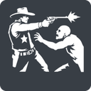
Typografia (D11)
| Rola | Krój · rozmiar / waga | Próbka |
|---|---|---|
| Imię postaci, tytuł karty | Roboto Condensed 24/700, wersaliki | Żołnierz w oporządzeniu |
| Tytuł okna i dialogu | Roboto Condensed 14/700 | Strzał pojedynczy — AK (Kałach) |
| Podtytuł | Roboto Condensed 13/400, muted | Twardziel 5 · Żołnierz · Nowy Jork |
| Etykieta sekcji i kolumny | Roboto Mono 10–11/400, wersaliki, +1 px | Zdolności klasowe · użycia · odnowienie |
| Nazwa w wierszu | Roboto 13/700 | Zażółć gęślą jaźń — Łowca Mutantów |
| Podpis wiersza | Roboto 11/400, muted | Zdolność klasowa · Zwiadowca |
| Liczby, liczniki, koszty | Roboto Mono 11–20/700, tabelaryczne | 37/37 1 240 szt. · 9 m · +3 · k20 = 17 |
| Tekst opisu | Roboto 13/400 | Po trafieniu bronią białą możesz wytrącić przeciwnikowi broń z ręki. |
| Przycisk | Roboto Condensed 12/700, wersaliki |
Odstępy 2 · 4 · 8 · 12 · 16 · 24 px — promienie 2 (chip) · 3 (tło ikony) · 4 (panel) — linia 1 px, wybór 2 px — wiersz 52 px z glifem 44 px — cel kliknięcia ≥ 24 px — przycisk i pole 28 px
Komponenty K1–K18
K1 Rama okna
Zastępuje: denim, pergamin, banery ui/official/*
K2 Nagłówek karty
Zastępuje: czerwona kreska pod imieniem, złote ramki
Żołnierz w oporządzeniu
Twardziel 5 · ŻołnierzŁowca Mutantów z bardzo długim imieniem
Zwiadowca 12 · Łowca MutantówGangus Kapo
BN · neutralny akcentK3 Tabliczka odczytu (D18)
Zastępuje: tarcza TT, heksy inicjatywy / szybkości / biegłości, pierścień poziomu
Wartość zmieniona efektem dostaje znak ± przy liczbie; źródło w tooltipie. Edycja jak dziś.
K4 Zakładki
Zastępuje: złote i pergaminowe zakładki
K5 Nagłówek sekcji
Zastępuje: bordowe belki --dnd5e-card-header-*
Zdolności klasowe — Twardziel
UżyciaOdnowieniePochodzenie — Nowy Jork
UżyciaOdnowienieBroń
WagaIlośćK6 Wiersz treści
Zastępuje: wiersze z gold-icon
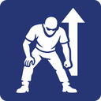
Glif 44 px bez obudowy · znaki kosztu przed nazwą · nazwa i podpis · po prawej licznik i powód/stan. Hover: tło akcentu 8%; wybór: obrys 1 px akcentu. Wszystkie stany — przypadki §3.
K7 Znak kosztu
Zastępuje: tekst „Akcja dodatkowa” w podpisie
K8 Licznik
Zastępuje: kolumna „Użycia”
Mono, cyfry tabelaryczne, wyrównanie do prawej, min. 5 znaków. Zero zawsze z powodem obok (K9).
K9 Plakietka stanu
Zastępuje: — (nowy komponent)
Tekst + ikona. WŁ. = działający efekt, niezależny od gotowości kolejnego użycia. Ostrzeżenie budżetu M8 nigdy nie dostaje skosu i niczego nie blokuje.
K10 Skos niedostępności
Zastępuje: opacity i filtry na glifie
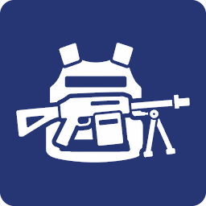
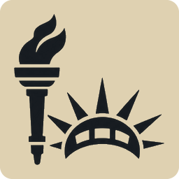
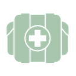
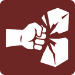
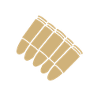
Glif zachowuje pełną nieprzezroczystość. Skos to ::after na opakowaniu .noe-glyph: −45°, 112% boku, grubość clamp(2 px, 5,5%, 4 px), obrys 1 px.
K11 Miernik i tor
Zastępuje: kapsuły PW/KW, --dnd5e-color-hp-*
--noe-meter-pw#4f9165Punkty Wytrzymałości--noe-meter-kw#8a6f93Kości Wytrzymałości--noe-meter-temp#5d86a8punkty tymczasowe--noe-meter-neutral#7b8893paliwo, ładownia, zapasyTor --noe-inset, płaskie wypełnienie, liczba mono; bez gradientów. Pipki panelu Stan zachowują --neuro-color-*.
K12 Przycisk
Zastępuje: złote przyciski czatu, --control-button-text-color
Podstawowy (akcent), drugorzędny (panel + linia), niebezpieczny (obrys i tekst danger), ikonowy. Wysokość 28 px. Nieaktywny: tekst disabled i powód w tooltipie.
K13 Pola formularza
Zastępuje: złoty slide-toggle i legendy
W Foundry pola pochodzą z rdzenia i dnd5e — most przypisuje tokeny do --input-*, --checkbox-*, --slide-toggle-*.
K14 Tooltip, popover, menu
Zastępuje: pergaminowe tooltipy dnd5e
TT 20
K15 Powłoka dialogu
Zastępuje: 126 wywołań DialogV2 z różną oprawą
- Zasięg
- 9/18 m
- Zostanie
- 1 szt.
K16 Karta czatu
Zastępuje: denim, bordowe nagłówki, złote przyciski
Pełne karty — w sekcji Czat i dialog.
K17 Pusty stan / strefa upuszczania
Zastępuje: „UPUŚĆ TU ULUBIONE”
K18 Chip, pill, tag
Zastępuje: pills z --pill-underlay-*
Przypadki obowiązkowe (§3)
Niezależne przykłady stanów — każdy wiersz to osobna sytuacja, nie tura jednej postaci.
Gotowe — akcja bonusowa z licznikiem
Aramis: korzyści stałe + operacja Wytrącenie [B] — koszt przy operacji, nie przy rodzicu
Wyzwalacz bez prostej litery akcji
Kilka aktywności o różnych kosztach — znak przy każdej operacji
Brak aktywności — korzyść stała; pasywności nie zgadujemy z braku kosztu
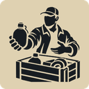
Nieznany stan — znak zapytania, bez skosu
0 użyć — skos + powód w wierszu
Duża liczba użyć nie łamie wiersza
Aktywne i zarazem wyczerpane: WŁ. zostaje, skos dotyczy kolejnego użycia
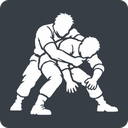
Zakaz mimo niewydanej puli
Brak warunku
Ostrzeżenie M8 mimo pozostałych użyć — ostrzega, nie blokuje, bez skosu
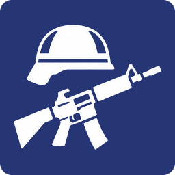
Zaznaczony wiersz (wybór ≠ aktywny efekt)
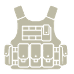
Makieta karty — jeden spójny budżet tury
Układ koncepcyjny, nie zrzut z Foundry: nagłówek K2 nad banerem Field kit, tabliczki K3, mierniki K11, szyna K4, sekcja K5 z akcentem klasy, wiersze K6–K10. Tura: A 1/1, B 1/1, R 0/1 (wydana), I 1/1, ruch 6/9 m.
Czat i dialog użycia
Pełna karta — atak
Porażka + Forsowanie
Zwinięta — wynik i adnotacje zostają (PM13)
Pusty magazynek → plakietka, nie pasek
- Formuła
- k20 + 5
- Zasięg
- 30/90 m
- Zużyje
- 1 × 7,62×39 mm